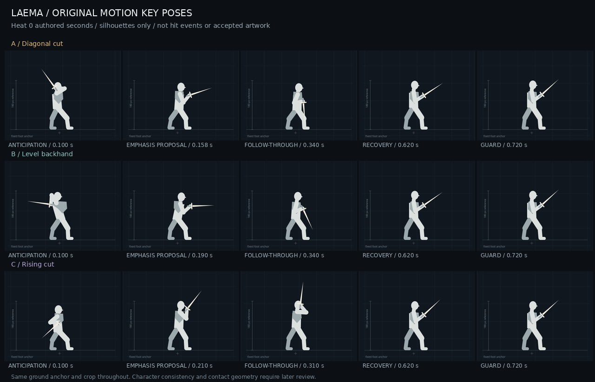

Laema · Character animation pipeline R&D · 23 October 2026
Approve the movement
before the artwork.
Phase 1 diagnosis and three original Fire X1 motion studies. The production-method comparison begins after a motion is selected.
AWAITING MOTION REVIEW · NO PRODUCTION-READINESS CLAIM
The browser comparison uses original joint targets at the project's 1280×720 viewport and approximately 180-pixel standing body height. Godot is a separate standalone preview, headlessly checked in 4.6.3. Neither preview is an integrated combat replacement.
What the inspection established
Inspected checkout: 16b4c3b7199589439a276881eca7516cc0f7401c. The working tree was clean at inspection. Source and image inspection covered the live Fire five-hit chain, four school Cast resources, Fire locomotion, later reviewed handoff, AI-study records, registration, playback clocks, queues and contact geometry. Native Laema dashboard and host chat history were unavailable; no dialogue restoration or checkpoint work occurred.
A source mismatch matters here. Live X1/X4/X5 use overnight_v04; X2/X3 use angle_proofs_v03. A later reviewed handoff selects a different 4/3/4/5/4-pose set and explicitly excludes substituting those older sheets. Its integration authorization is preserved, but these new studies do not install it. “Reviewed artwork,” “currently bound artwork” and “runtime-accepted result” remain separate states.
| Cause | Evidence | Implication |
|---|
| Motion design | Most live attacks retain a similar wide, planted stance; arms and blade carry most changes. X4 contains three actual poses held over six keys. X1/X5 have similar raised chambers. Cast raises the blade early and stays overhead. | More generated detail will not supply weight transfer, braking, action distinction or a complete recovery. Those must be authored and reviewed in motion. |
| Character-art consistency | Pale ponytail/blue vest/white shirt/red sash survive broadly. Hilt, guard, shield perspective/size, face, gloves and boot materials drift; Idle/Cast use more ornate glowing steel and narrower stances than attacks. | A fixed registration anchor cannot solve anatomy, equipment or material continuity. Use a reference pack plus per-frame continuity checks. |
| Timing | Normalized AnimationPlayer time is remapped through a pacing split and Heat. X1's eight holds are approximately 65/65/27.5/28/36.6/130.5/130.5/236.8 ms at Heat 0. | Uniform GIF playback and editor speed 1 misrepresent the game. At Heat 100 some strike drawings last 18–24 ms; recovery drawing exposure dominates. This needs visual judgment, not an automatic speed fix. |
| Transitions | Independent sheets switch without sprite blending. Cast's final drawing stays overhead while Idle returns to low ready; stance and equipment differences magnify the discontinuity. | Author entry/exit poses across actions. A good isolated strip is insufficient evidence of whole-chain flow. |
| Technical integration | Native Sprite2D region tracks, registration and contact curves are already separated. Current code samples active-window geometry and mirrors committed direction. Earlier geometry fixes exist. | No new engine defect was established. Older provenance describing misalignment is historical. A new blade arc still requires fresh geometry review; retaining timings alone does not align it. |
Prior X2 revisions through v07 and the X5 posture/shield corrections demonstrate repeated correction work. Complete-pose regeneration can change details outside the requested repair. No reliable retrospective labor times were found; no historical hours are invented here.
Restored static inspection evidence: live-frame contact sheet · equipment details · reference context.
Current playback contract
| Move | Distinct live drawings | Heat 0 duration | Heat 0 contact / launch | Fixed Heat 100 duration |
|---|
| Fire X1 | 8 | 0.720 s | 0.126–0.5075 s | 0.480 s |
| Fire X2 | 6 | 0.750 s | 0.1851–0.5906 s | 0.500 s |
| Fire X3 | 5 | 0.645 s | 0.117–0.4575 s | 0.430 s |
| Fire X4 | 3 across 6 keys | 0.690 s | 0.1697–0.530 s | 0.460 s |
| Fire X5 | 7 | 1.400 s | 0.180–0.850 s | 0.9333 s |
| Fire Cast | 10 | 1.200 s | Launch 0.288 s | 0.800 s |
Heat can change during an action; the previews intentionally hold it fixed at 0 or 100. X1 uses normalized split 0.60, not an impact event. Its nominal “windup” ends at 0.210 s after the hit-capable interval has begun; “recovery” includes late active frames. Fire Cast launch is once-only and separate from projectile collision. Other schools retain the legacy shared Cast character and a later normalized launch (0.36 versus Fire 0.24).
Source-timed reconstruction: unchanged live atlas cells, fixed Heat 0 then 100, native scale, 60 fps. This is not a Godot recording or gameplay test. Each clip includes a labelled review gap. Timing, input file paths and texture hashes: live-contract.json.
Three original X1 directions
Fire X1 is representative because it touches ready, chain continuation, Casting and return to locomotion without making the finisher the first problem. The 32 joint keys were authored for this experiment; no existing animation was traced, imported, retargeted or used as pose-generation input. All three keep the same 0.720/0.480-second action envelope. They are unranked.
A · Diagonal cut
Rear-foot load and shoulder chamber; a forward descending release; a low braking arc; settle to the common guard.
Review focus: does the hip lead the blade, and does the low follow-through feel controlled at Heat 100?
B · Level backhand
Closed shoulder coil and hip counter-shift; a level sweep; a compact elbow brake; open back into the common guard.
Review focus: is the flatter silhouette readable without excessive windup, and is the torso turn clear enough in side view?
C · Rising cut
A small compression and low chamber; upward diagonal release; a high catch; lower the blade into the common guard.
Review focus: is the rising path distinct at native scale, and does the high catch make recovery feel too busy?
| Study phase | Heat 0 authored time | Meaning |
|---|
| Anticipation | 0–0.126 s | Body load and clear blade chamber; readable response starts before hit-capable time. |
| Release / impact-emphasis poses | Approximately 0.126–0.210 s | A emphasis 0.158; B 0.151–0.190; C 0.162–0.210. These are artistic pose accents, not hit-event times. |
| Follow-through / braking | A/B: 0.210–0.340 s; C: 0.210–0.440 s | Distinct low / level / high endings. Existing contact remains possible during braking and early recovery; selected motion must be checked against the full window. |
| Recovery to common guard | A/B: 0.340–0.720 s; C: 0.440–0.720 s | Stable feet and return to an explicit reusable endpoint. This visual recovery starts while the existing contact window is still open. |
At fixed Heat 100 divide these times by 1.5. The ground anchor is fixed, the blade is a constant 88-pixel blocking shape, and fine costume/anatomy are omitted. The prototype's existing 3-pixel body lunge is not simulated. These choices isolate movement; they do not establish final weapon dimensions or character proportions.

Open the interactive viewer for 1×/2×, both facings, Heat settings, frame stepping and scrubbing. Slow playback is explicitly labelled and is not used as gameplay-speed evidence. Browser and Godot render the same authored data through separate drawing implementations.
Transitions and gameplay constraints
All proposals start and finish in the same provisional sword/shield guard. The identity reference is Laema Open from the preserved character set; Fire Idle supplies provisional side-view equipment context. Neither the outfit nor weapon becomes a final production lock. The latest request for three motion proposals takes precedence over the older five-concept comparison convention.
| Transition | Definition for all three proposals | Evidence status |
|---|
| Idle / Walk → X1 | Enter the common guard/load immediately; input-facing and existing movement lock remain owned by gameplay. Root lunge remains distinct from body-art alignment. | Guard pose continuity shown; actual locomotion boundary not simulated. |
| X1 → queued X2 / Cast | Next action begins at X1 completion, 0.720 s at Heat 0. Design a future matching entry to the approved endpoint; do not add a blend that delays input. Existing buffer opens about 0.098 s, ordinary queue about 0.168 s; these are not transition times. | Endpoint defined; real X2/Cast handoff pending. No new intermediate drawings approved. |
| X1 → Idle / Walk / Charging | Settle to guard by completion; existing rules decide locomotion and retained chain state. | Guard entry/exit shown; no gameplay arbitration test. |
| X1 → Dodge | Preserve current Fire rule: only strictly before active_start. Do not allow an active/recovery cancel to hide a poor recovery. Selected anticipation needs a readable interruption pose. | Rule inspected; no dodge animation/probe run. |
| Hit reaction / interruption / restart | Gameplay may replace the action through existing rules; avoid relying on a last-frame-only repair for equipment identity. | Integration and retry remain future checks. |
The current actor root is source (224,348), while the foot registration is (224,400). The 52-pixel difference is intentional. Current query conversion is actor-local, not foot-local; do not reuse the preview's foot anchor as a hitbox origin. The new sword paths are not aligned to the old full-window queries.
The production experiment after motion approval
The method winner is intentionally unresolved. Existing AI studies supply evidence of continuity and correction problems, but there is no controlled AI-versus-rig comparison yet. The blocking renderer is an authoring aid, not evidence that a production cutout rig has succeeded.
| Method | Actual experiment to run | Record |
|---|
| Reference-guided AI sprite strip | Generate the selected motion against one fixed character/equipment pack and approved pose/phase board. Preserve every attempt. Export raw and corrected strips at the same anchor, size and timing. | Prompts, model/tool details exposed, attempts/rejections, anatomy/material/equipment repairs, corrected frames, export work. |
| 2D rig + frame-by-frame hybrid | Prepare reusable layered character art; rig the approved motion. Use replacement drawings for depth changes, sword-hand occlusion, shield turns and difficult compression. Export identical playable timings. | Part separation, rig setup/weights, motion labor, deformation repairs, replacement drawings, reuse and per-action labor. |
| 3D-assisted 2D render, conditional | Test if blade depth, foreshortening or repeatable character volume remains the controlling failure, or reuse justifies setup. Author motion from scratch; match camera and scale. Otherwise mark not tested. | Model/rig setup, motion, camera/light/render work, style conversion, overpainting and remaining drift. |
For each method compare raw and corrected output in the same Godot scene and synchronized video, at native scale and fixed Heat 0/100, both facings. Include silhouette playback, frame stepping, anchors/feet, action boundaries and the selected blade/query overlay. Record motion quality, responsiveness, readability, identity, alignment, transition snaps and remaining defects. Do not average away a blocking defect.
Track active human minutes separately from machine/wait time; record setup, rejected attempts, motion authoring, per-frame correction, integration and review rework. One-time rig cost and per-action cost remain separate. The next-action cost stays an estimate until a materially different action is also tried. No production workflow recommendation is defensible until comparable corrected outputs and total effort exist.
Checks and limits
- Godot 4.6.3 imported the standalone preview, sampled 219 poses and completed 120 headless scene frames. Fixed blade length checks passed. Details: verification.json.
- No graphical Godot capture or integrated combat playtest was established here. The game declares a 4.7 feature target; the isolated preview was checked on the installed 4.6.3 engine.
- Current-animation video is a source-derived reconstruction, not engine evidence. Motion-review media uses the browser renderer of the new data.
- No product assets, contact geometry, rules, canonical GDD/TDR, commits, pushes or live exports were changed. Research work is isolated in this folder, excluded from the main Godot project by .gdignore.
- Phase 3 polished method trials and Phase 4 integrated comparisons await the selected motion. No bulk replacement or production readiness is claimed.
Decision for this review
Select A, B or C to develop, or give changes to one proposal. Approving a direction approves the motion experiment; it does not approve final artwork, contact geometry, production integration or a final outfit/weapon. Review the normal-speed native-size view before using the enlarged or slowed views to explain corrections.
Primary sources in the parent Laema checkout: AGENTS.md; docs/GAME_DESIGN.md; docs/TECH_ARCHITECTURE.md; docs/IMPLEMENTATION_STATUS.md; docs/ATTACK_STYLES.md; docs/art/ART_DIRECTION.md; docs/art/handoffs/2026-10-21-fire-x1-x5-pose-match/HANDOFF.md; config/attack_animations/*.tres; config/attack_styles/fire_x*.tres; scenes/player/player.tscn; scripts/combat/{might_component,attack_style,attack_geometry,heat_controller}.gd; scripts/player/player.gd. See live-contract.json for exact current textures and hashes. Department assignment remains unconfirmed; no routing metadata was invented.